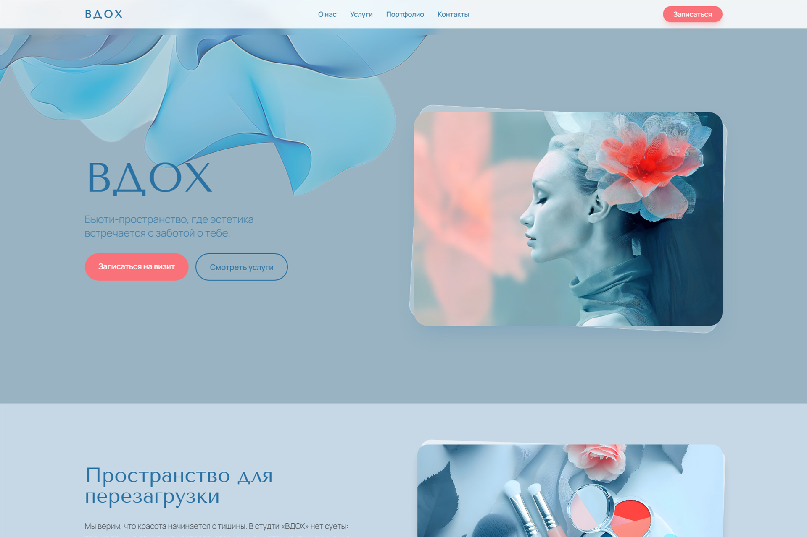
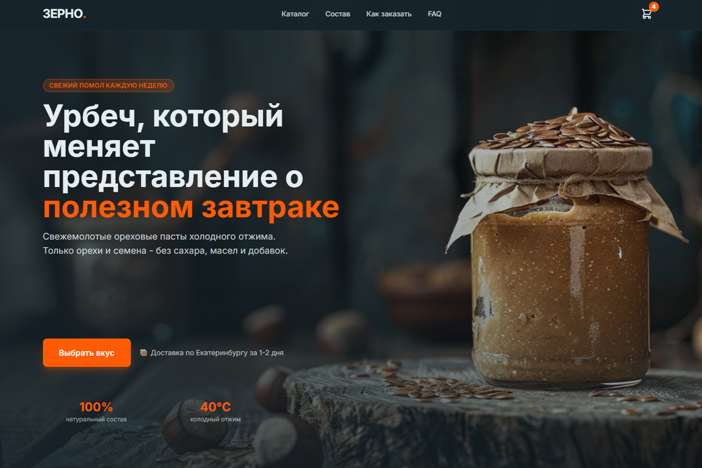
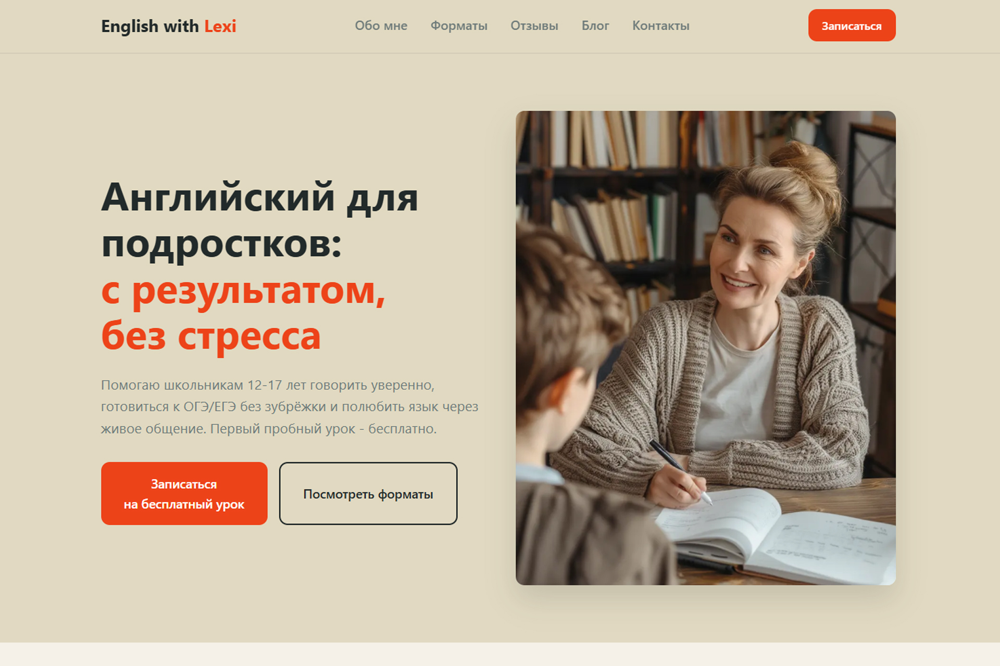
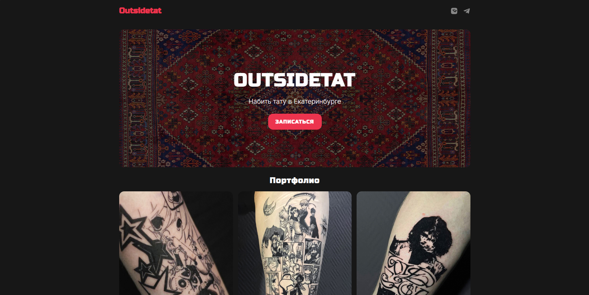
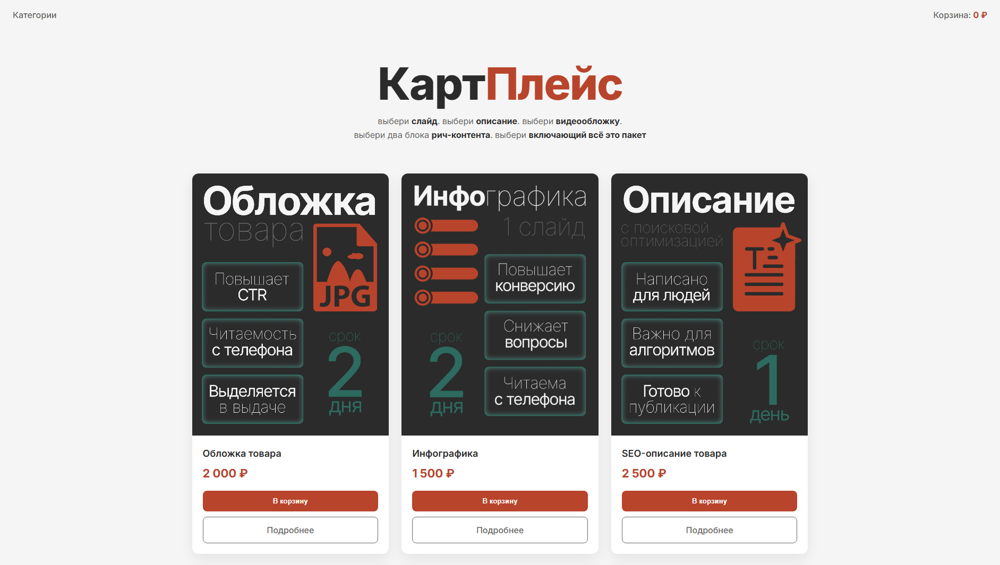

Все проекты
5 реализованных кейсов: от концепции до запуска

Бьюти-салон ВДОХ
Многостраничный лендинг для салона красоты. Реализована AI-генерация изображений, лайтбокс-галерея и удобная форма заявок.
Смотреть кейс
Витрина продукта Зерно
Продуктовая витрина для локального бренда. Акцент на визуальной подаче, детальном описании состава и материалов.
Смотреть кейс
Репетитор по английскому
Персональный сайт эксперта. Продуманный блок «Обо мне», понятные карточки услуг с ценами и блок доверия с отзывами.
Смотреть кейс
Тату-мастер
Лендинг услуги в темной эстетике. Галерея работ с лайтбоксом, структурированный прайс-лист и форма быстрой записи.
Смотреть кейс
Маркетплейс КартПлейс
Витрина продукта для digital-услуг. Каталог товаров, детальные карточки продуктов и интуитивная навигация.
Смотреть кейс